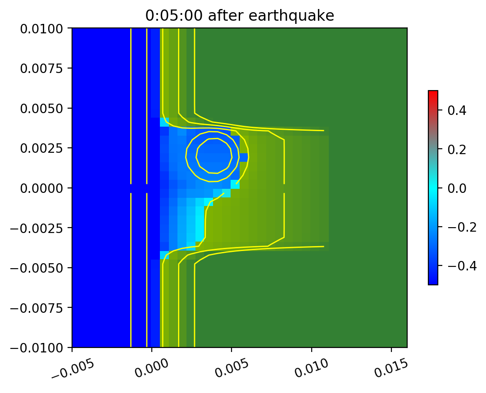

< < < Index > > >

Image source: /Users/rjl/git/clawpack/new_features_for_v5.7.0/examples/geoclaw_test1/_plots_1/frame0001fig11.png
Other figures at this time: Computational domain coastal area All Figures
Other frames: 0 1 2 3 4 5 All Frames